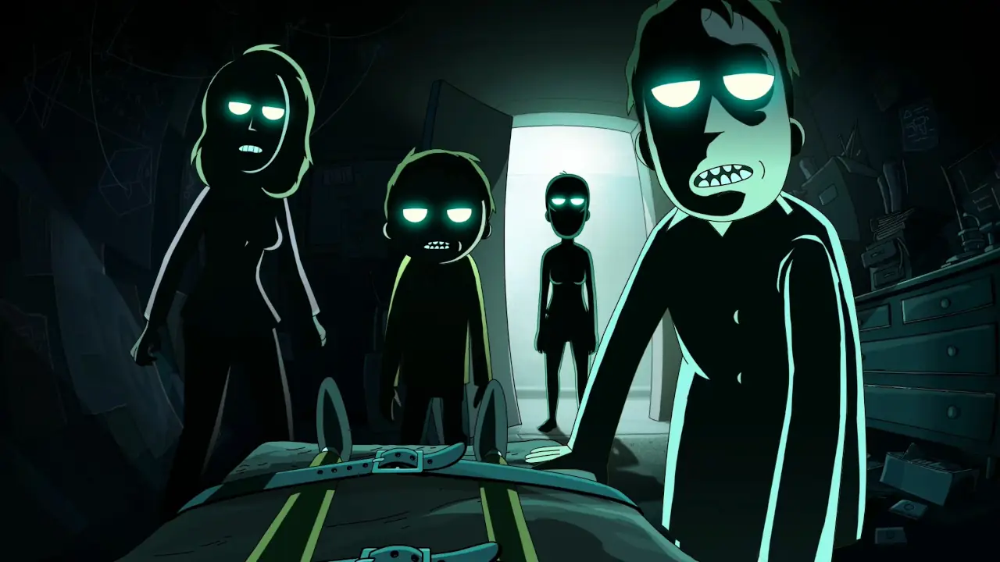
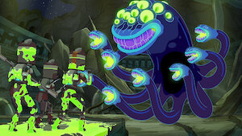
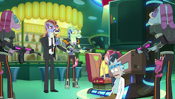
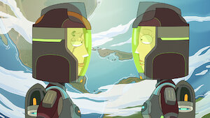
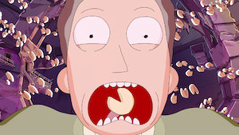
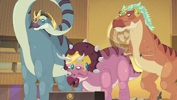
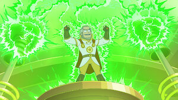
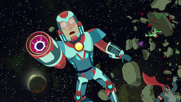
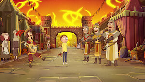

EXPLORAR TEMPORADAS

Após o colapso da Cidadela dos Ricks, a família Smith enfrenta consequências interdimensionais enquanto Rick e Morty tentam sobreviver perdidos no espaço.

Morty fica preso dentro de um videogame avançado e Rick precisa resgatá-lo enquanto Summer lidera uma missão inspirada em filmes de ação clássicos.

As duas versões de Beth desenvolvem uma relação inesperada, deixando Jerry completamente perdido enquanto a dinâmica familiar entra em colapso emocional.
A família começa a usar uma tecnologia que cria versões noturnas de si mesmos, mas os "eus da noite" logo assumem o controle, iniciando uma guerra doméstica surreal.

Um simples jantar em um restaurante chinês vira caos absoluto quando biscoitos da sorte começam a prever destinos impossíveis que se tornam reais.

Dinossauros extremamente evoluídos retornam à Terra oferecendo uma utopia perfeita, mas Rick se recusa a aceitar um mundo melhor sem sua própria genialidade.

Rick e Morty entram em uma aventura totalmente meta, enfrentando personagens conscientes da própria narrativa e quebrando as regras da realidade televisiva.

Cansado de vilões ridículos, Rick tenta ignorar um inimigo aparentemente insignificante, mas acaba confrontando questões pessoais inesperadas.

Morty recebe um misterioso presente que o transforma em um cavaleiro lendário, arrastando Rick para uma aventura medieval cheia de magia e consequências perigosas.
Durante o Natal, Morty finalmente recebe o presente que sempre quis, mas a tentativa de Rick de agradar a família acaba desencadeando uma missão espacial inesperada.